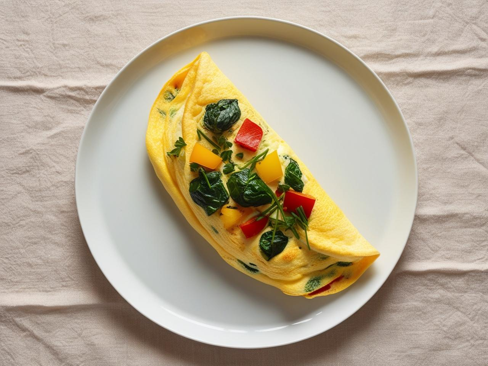
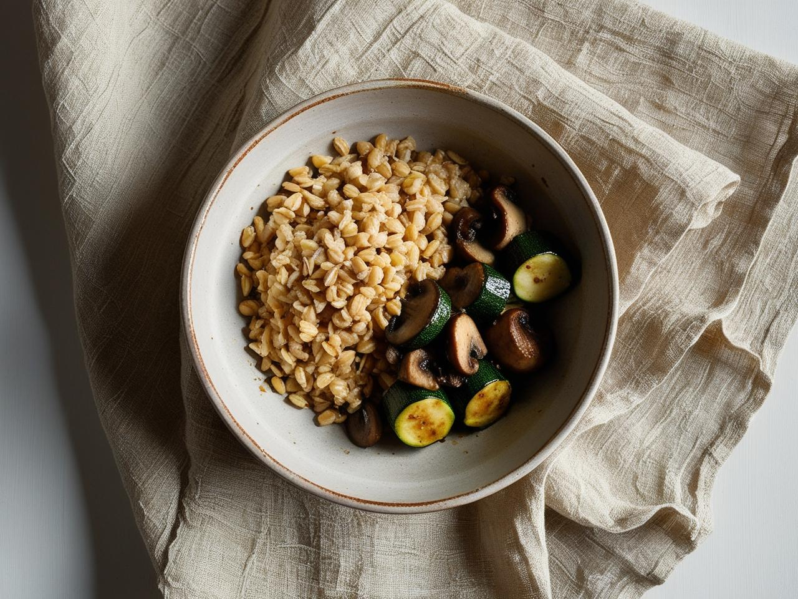
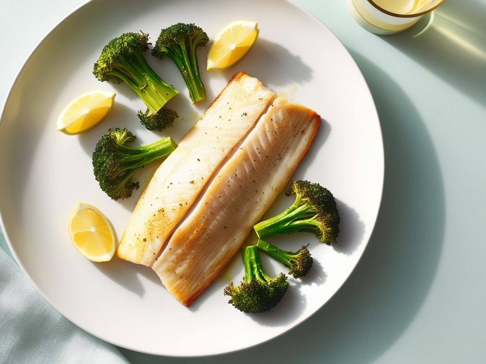
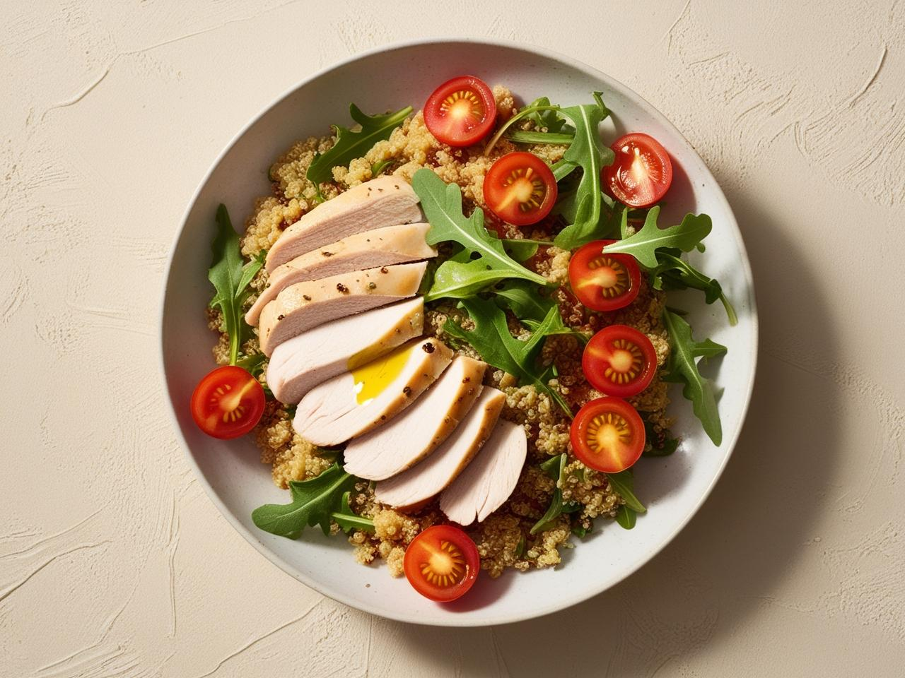
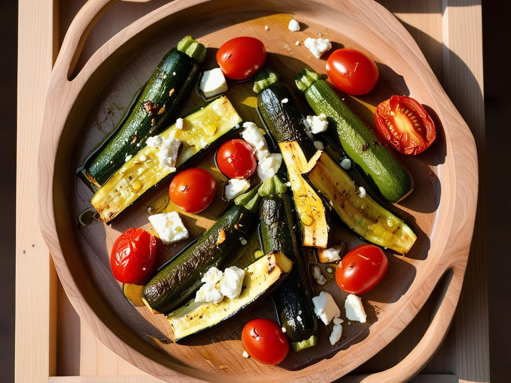

Омлет з зеленню та овочами
Інгредієнти:- • 2 яйця
- • Шпинат, перець, зелень
- • Сіль, перець, олія для смаження
-
1. Яйця збити з сіллю.
2. Овочі нарізати, злегка обсмажити.
3. Влити яйця, смажити до готовності.

Булгур з грибами і тушкованими кабачками
Інгредієнти:- • ½ склянки булгуру
- • 150 г грибів
- • 1 невеликий кабачок
- • Олія, сіль, зелень
- 1. Булгрур зварити.
- 2. Окремо обсмажити гриби, потім додати кабачок.
- 3. Змішати з булгуром, додати зелень.

Запечена риба з броколі
Інгредієнти:- • Філе білої риби (тріска, дорадо)
- • Броколі
- • Лимон, олія, сіль, спеції
- 1. Рибу приправити, полити лимоном і олією.
- 2. Запікати 15–20 хв при 180°С.
- 3. Окремо відварити броколі, подати разом.

Теплий салат з індичкою та кіноа
Інгредієнти:- • ½ склянки кіноа
- • 100 г філе індички
- • Помідори чері, авокадо, рукола
- • Оливкова олія, лимонний сік
- 1. Кіноа зварити, індичку обсмажити.
- 2. Нарізати овочі.
- 3. Змішати все разом, заправити олією.

Запечені овочі з фетою
Інгредієнти:- • Кабачок, перець, баклажан
- • 50 г сиру фета
- • Олія, трави, сіль
- 1. Овочі нарізати, викласти на деко.
- 2. Збризнути олією, приправити.
- 3. Запікати 25 хв при 190°С. Подати з фетою